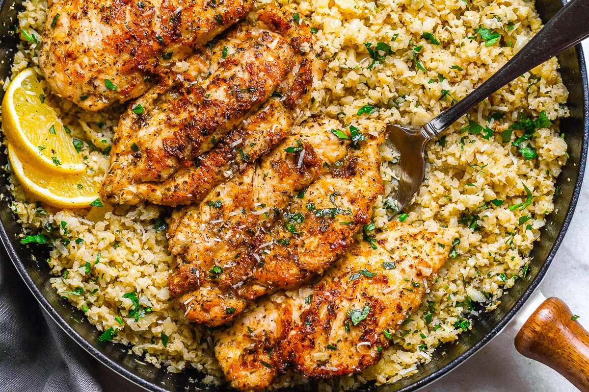

Garlic Butter Chicken and Parmesan Cauliflower Rice

Description
This is one of my go-to dishes. It tastes great and doesn't take that long
to make.
You only need a few ingredients and some seasonings, let's dig in on how
to make it.
Ingredients
- 2 large chicken breasts
- 1/2 cup of grated parmesan
- 2 cloves of garlic
- Salt and pepper
- 1tsp Paprika
- 1Tbsp Italian Seasoning
- 4Tbsp unsalted butter
-
1 head of Cauliflower, riced. (I just use frozen cauliflower rice)
- 1/2 cup of chopped white onion
- 2Tbsp of vegetable stock
- Juice of 1 lemon
- Red pepper flakes, optional
- 1/4 cup of parsely, chopped
Steps
Chicken
- Halve your chicken breast to get 4 smaller pieces
-
In a shallow plate, combine parmesan cheese, 1/2 of your grated garlic,
paprika, and Italian seasoning. Season the chicken breasts with salt and
pepper; dredge in the parmesan mixture; shake off excess and set aside.
-
In a large non-stick skillet melt 2 tablespoons of butter over
medium-high heat. Cook chicken cutlets until golden on each side and
cooked through - about 3-4 minutes for each side, depending on the
thickness of your chicken cutlets. Transfer to a plate.
Cauliflower Rice
-
In the same pan, melt 2 tablespoons of butter. Fry the remaining garlic
and your onion for 1 minute until fragrant — be careful not to burn.
-
Add the riced cauliflower to the skillet and stir to mix everything
together well and coat in melted butter. Cook, stirring regularly for 1
minute.
-
Stir in the 2 tablespoons vegetable stock, about half the parsley, and
lemon zest (if using). Cook the cauliflower rice for one minute to
reduce juices then add the lemon juice and a few sprinkles of leftover
parmesan cheese, if you like.
-
Adjust seasoning as needed. Stir in the remaining parsley. Return
chicken breasts over cauliflower rice and reheat quickly. Serve your
parmesan chicken with fresh cracked black pepper, red chili pepper
flakes, and more parmesan.
- Enjoy!
Note: Make sure to use a non-stick pan otherwise the
parmesan might stick.
Garlic Butter Chicken with Parmesan Cauliflower Rice Source